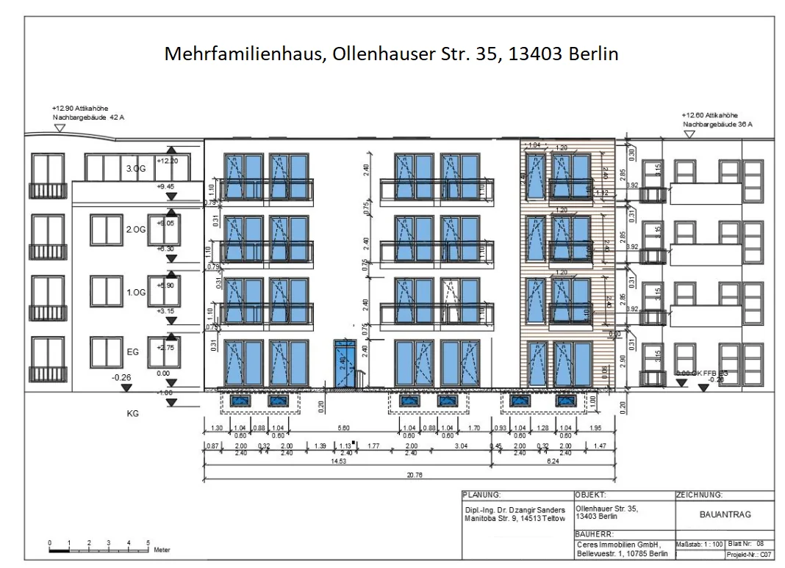
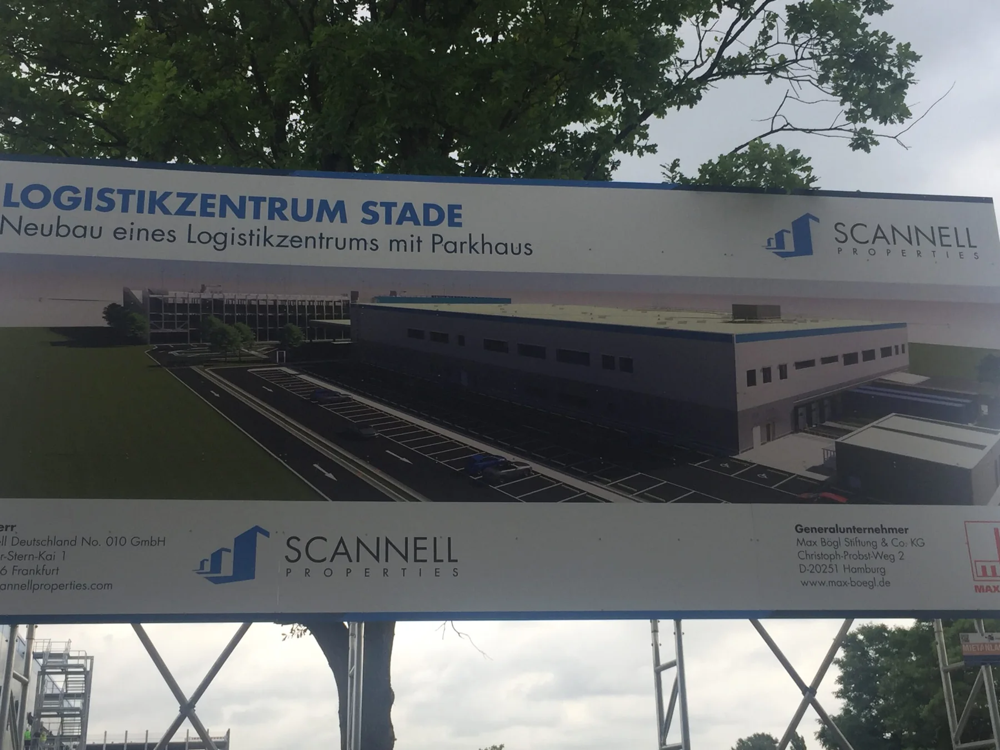

01
Immobilie kaufen oder verkaufen
Technischen Zustand, erkennbare Risiken, Folgekosten und Marktwert getrennt und nachvollziehbar prüfen.
Berlin · Teltow · Brandenburg
Technische Prüfung, Bewertung, Planung und Bauleitung – einzeln oder als abgestimmter Weg bis zur Übergabe.
Wir prüfen, planen, koordinieren und überwachen. Die Bauausführung erfolgt durch beauftragte Fachunternehmen.
¹ Angaben des bestehenden Webauftritts; Nachweise und Formulierungen werden vor Veröffentlichung bestätigt.

Ein Ansprechpartner · einzelne Module oder abgestimmtes Gesamtpaket
Der Einstieg folgt Ihrer Situation – nicht einer unübersichtlichen Liste technischer Gewerke.
01
Technischen Zustand, erkennbare Risiken, Folgekosten und Marktwert getrennt und nachvollziehbar prüfen.
02
Schäden und Ursachen klären, Maßnahmen planen und die Ausführung fachlich begleiten.
03
Genehmigung, Ausschreibung, Vergabe, Bauleitung, Qualitätskontrolle und Abnahme als abgestimmter Prozess.
Nach Geschäftswert und realen Kundenfragen geordnet
Koordination von Fachunternehmen, Terminen, Qualität und Entscheidungen bis zur geordneten Übergabe.
Technische Untersuchung von Schäden, Mängeln und Ursachen mit nachvollziehbarer Dokumentation.
Markt- und Wertermittlung für Immobilien und Grundstücke – getrennt von der technischen Zustandsprüfung.
Zustand, erkennbare Risiken und zu erwartende Investitionen vor dem Immobilienkauf einordnen.
Planungs- und Genehmigungsunterlagen für Neubau, Umbau, Sanierung und Modernisierung.
Leistungsumfang strukturieren, Angebote vergleichen, Fachunternehmen auswählen und die Ausführung bis zur Abnahme begleiten.
Erfahrung wird nachvollziehbar, wenn Rolle und Ergebnis sichtbar sind.
Die Arbeitsfassung zeigt, wie bestehende Referenzen von einer Bildergalerie zu belastbaren Fallbeispielen weiterentwickelt werden können.

Öffentliches BestandsprojektBerlin · 2021–2022
Von der konzeptionellen Lösung im bestehenden Wohngebiet bis zur schlüsselfertigen Übergabe.

Stade · 2021–2022
Berlin · 2019
¹ Bestandsangaben aus dem aktuellen öffentlichen Projektarchiv; Aufgabenanteile, Zahlen und Nutzungsrechte werden vor Veröffentlichung bestätigt.
Wissenschaft · Planung · Ausführung · Bewertung
Der neue Auftritt soll nicht nur Leistungen aufzählen. Er soll erklären, wie Dr.-Ing. D. Sanders technische Risiken einordnet, Entscheidungen vorbereitet und komplexe Vorhaben bis zur Umsetzung begleitet.
Tätigkeit seit 1978, Unternehmensgründung 1995, Sachverständigentätigkeit seit 2001.
Bezeichnungen, Kammerzugehörigkeit, Zertifikate und Versicherungsangaben.
Auswahl, bibliografische Daten, Relevanz und überprüfbare Verweise.
Der Weg zum neuen Auftritt
Der neue Webauftritt entsteht getrennt vom laufenden System. Erst nach fachlicher, technischer und inhaltlicher Abnahme wird kontrolliert umgestellt.
Ziele, Zielgruppen, Systeme, Zugänge, Abhängigkeiten und wiederherstellbare Backups klären.
Leistungen, Kundenfragen, Fälle, Nachweise und Sprachversionen verbindlich ordnen.
Design, Inhalte, Formulare, Performance, Barrierearmut und technische Grundlagen separat testen.
Weiterleitungen, DNS, E-Mail, Analytics, Formulare und Rollback vor dem Umschalten verifizieren.
Der nächste Schritt
In einem ersten Gespräch werden Prioritäten, verfügbare Nachweise und der technische Ausgangspunkt geklärt. Danach lassen sich Umfang, Verantwortung und ein belastbarer Umsetzungsweg festlegen.
Manitoba Straße 9 · 14513 Teltow